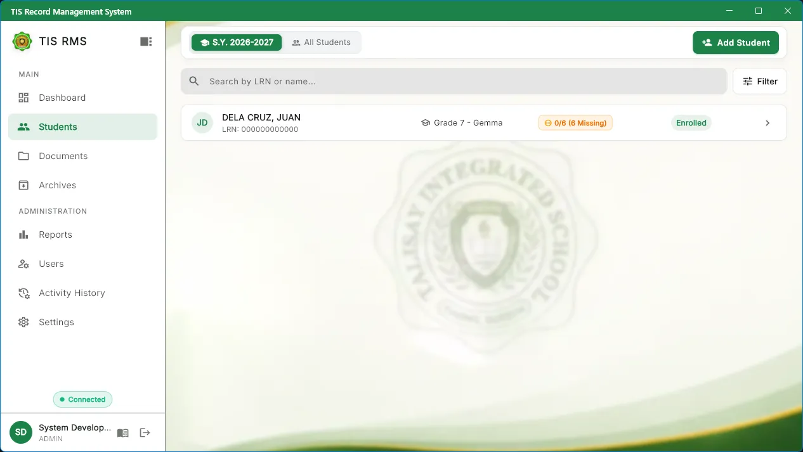
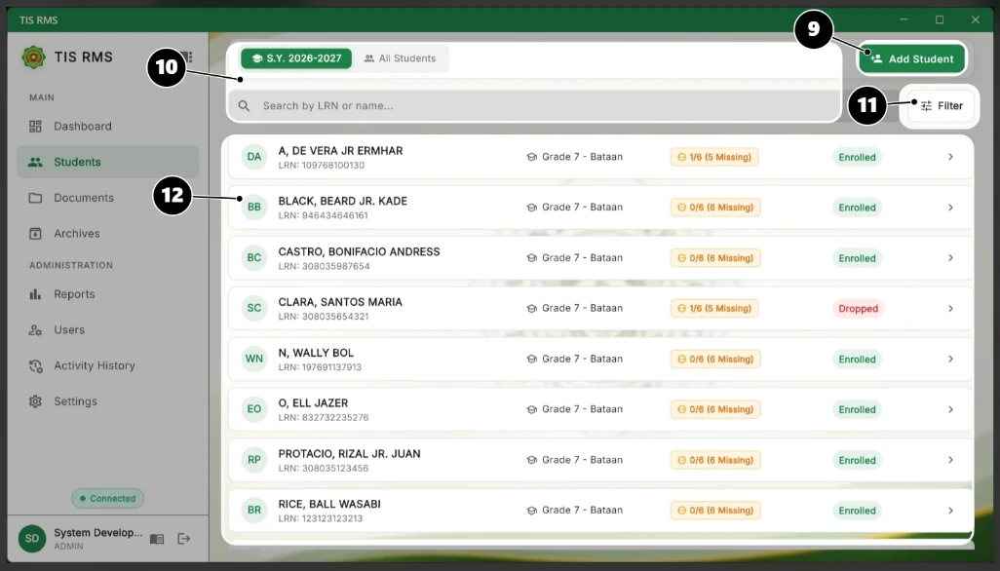
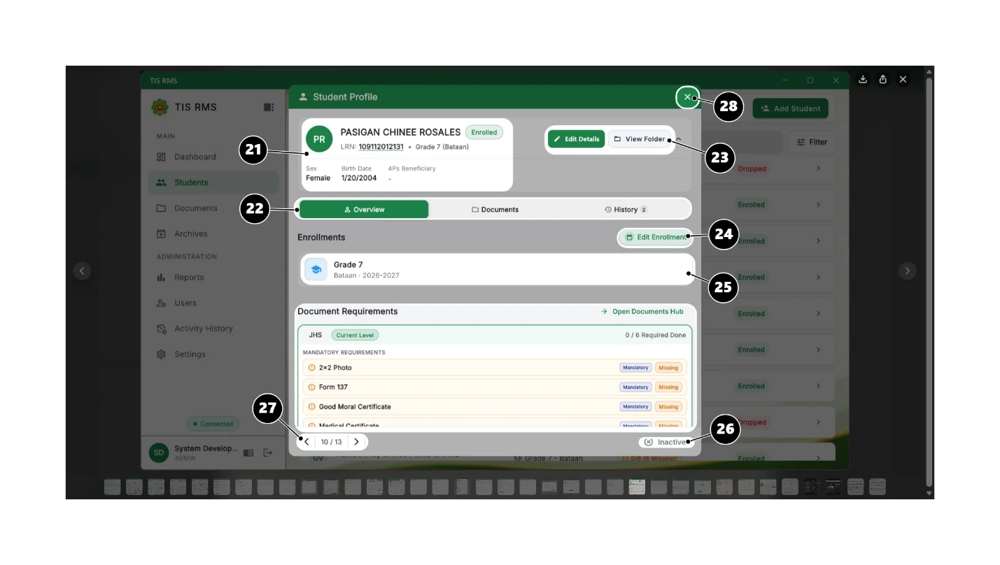
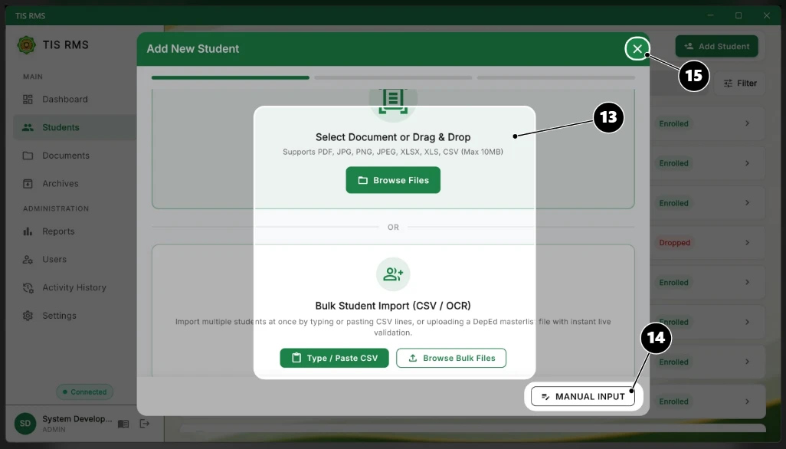
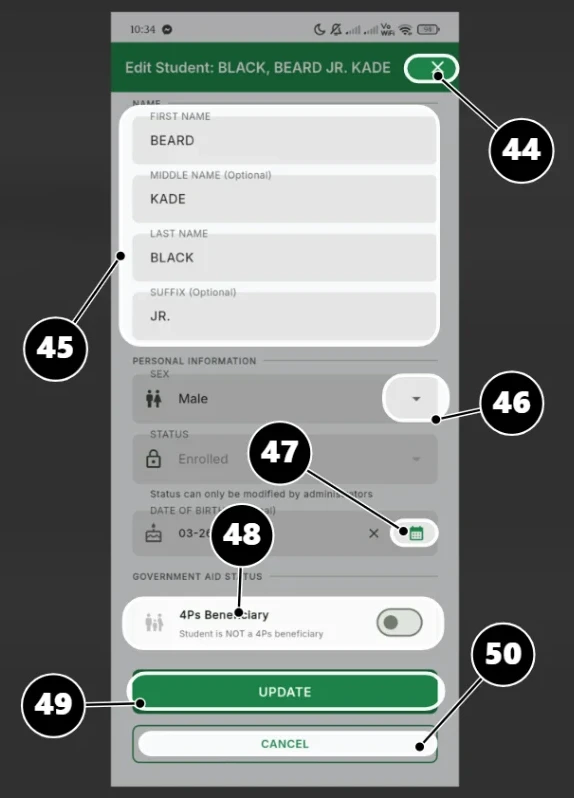

Module 2: Student Information
Comprehensive learner profiles, advanced multi-criteria filtering, SF9/SF10 OCR autofill, and bulk registration.
- Flexible Search & Multi-Filtering: Search by name, LRN, grade level, or section; filter dynamically by Grade Level, Section, 4Ps Beneficiary, Document Status, and pagination count.
- In-Depth Learner Profile: Displays complete demographics, enrollment timeline, JHS/SHS document checklist chips, submission ratio, and one-click folder navigation.
- OCR Accelerated Registration: Extract Name, LRN, Birth Date, and Sex automatically from DepEd SF9 and SF10 forms to speed up text-field entry.
- Bulk Registration (OCR & CSV): Ingest full class cohorts at once using multiple SF9/SF10 documents or formatted CSV spreadsheets.
- Multi-Select Actions: Right-click on Windows or long-press on Android to select multiple learners for batch status updates.
The Student Information module is the central database of all learners at Talisay Integrated School. Each student is uniquely identified by their official 12-digit Learner Reference Number (LRN).

Admin & Teacher Side: Search, Filtering & Profile Inspection
Both Administrators and Teachers can search, filter, and inspect learner details within their permitted scopes:
- Multi-Field Search: Instant live lookup by learner last name, first name, LRN, grade level, or section.
- Dynamic Filters:
- Grade Level: Displays grade levels populated dynamically from backend data.
- Section: Displays sections populated dynamically from backend data.
- 4Ps Beneficiary: Filter learners by Yes or No status.
- Document Status / Attention: Filter by missing requirement severity:
- Default: Displays all students.
- Complete: Filters students with fewer or zero missing documents.
- Pending: Filters students with more missing documents needing follow-up.
- Students per Page: Configure pagination size (e.g., 10, 25, 50, or 100 learners per page).

Add Student, School Year & All Students pills, Search, Filter, and Roster
Student Directory & Roster Controls
S.Y. 2026-2027) to view corresponding student enrollments.0/6 (6 Missing)), enrollment status (Enrolled, Dropped, Transferred, Graduated, Inactive), and a detail arrow.Multi-Criteria Filter Dialog
Student Information View (Detail Inspector)
Clicking or tapping any student card or table row opens the comprehensive Student Information View:
- Core Identity & Demographics: Full Name, 12-digit LRN, Status (Enrolled, Graduated, Dropout, Transferee, or Inactive), Sex, Birth Date, and 4Ps Beneficiary designation.
- Enrollment History: Multi-year enrollment timeline indicating past school years, grade levels, and sections attended.
- Document Requirements Checklist: Clearly segregated into JHS Requirements and SHS Requirements.
- Document Status Ratio: Displays submitted count over total required count (e.g., "3/5 Submitted"). Clicking or hovering over the badge reveals a full breakdown of completed and missing requirements.
- Open Folder Button: Directly navigates into the student's virtual digital document repository.

Profile header, Edit Details, View Folder, Overview/Documents/History tabs, Edit Enrollment, and Checklist
Student Profile Inspector (Overview, Documents & History Tabs)
Administrator Side: Registration, Editing & Batch Tools
Administrators have full management authority over student registration, profile updates, and enrollment adjustments:
- Add Students (Manual & OCR): Administrators can enter learner details manually or utilize optical character recognition (OCR) from DepEd SF9 or SF10 documents to automatically extract and populate text fields.
- Bulk Student Registration: Register entire cohorts at once by scanning multiple SF9/SF10 documents from different students, or importing a standard CSV roster. For full instructions, visit the Bulk Add Using OCR and CSV guide below.

Drag & drop SF9/SF10 OCR, Bulk CSV/OCR import, or Manual Input
Add New Student Workflow (Admin)
Bulk Add Using OCR and CSV
The Bulk Add feature dramatically accelerates student registration and section intake. Administrators can upload batches of SF9 and SF10 documents to extract multiple learner profiles simultaneously, or upload a formatted CSV spreadsheet containing names, LRNs, birth dates, sexes, and 4Ps designations. The system validates LRN format, checks for duplicates, and creates records in a single operation.
Bulk Student Import (CSV / OCR)
Editing Student Details & Enrollment Standing
- Edit Student Details: Administrators can modify any learner attribute: LRN, Name, Sex, Status (Enrolled, Transferred, Dropped, Inactive), Birth Date, and 4Ps Beneficiary status.
- Edit Enrollment: Administrators can adjust academic year enrollment, scan uploaded documents associated with the student using OCR (SF9 and SF10 supported), or apply bulk enrollment updates via CSV.
- Multi-Select Actions: Long-press on Android tablets or right-click on Windows PCs to select multiple learners simultaneously. A floating action bar allows administrators to update enrollment statuses in bulk.

Name fields, Sex, Status (Admin-only), Birthday Calendar, 4Ps Beneficiary, Update & Cancel
Edit Student Details Modal
Edit Enrollment & OCR Scan History (Admin)
Multi-Select Batch Actions (Admin)
Teacher Side: Student Management
Teachers have access to key student management tools for their assigned advisory sections:
- Register New Students: Teachers can register new students entering their assigned advisory sections.
- Edit Permitted Details: Teachers can correct basic learner details including LRN, Full Name, Sex, Birth Date, and 4Ps Beneficiary status. Formal status modifications (such as Transferred, Dropped, or Graduated) remain restricted to Administrators.